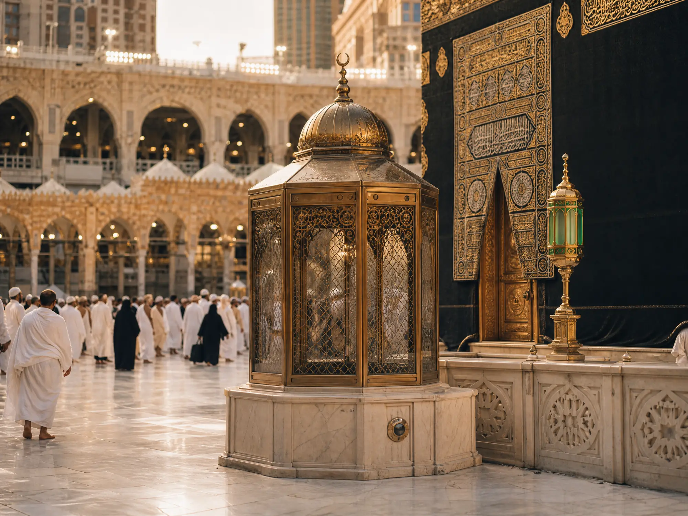

In short
- UK residents can only book Hajj through Nusuk Hajj (hajj.nusuk.sa).
- Places are limited and packages sell out quickly. Register as soon as registration opens.
- Anyone offering a Hajj visa outside Nusuk is breaking the rules. Performing Hajj without a permit brings fines and deportation.
- You need a meningitis ACWY certificate, issued at least 10 days before arrival.
Step by step




Create your Nusuk Hajj account
Sign up at hajj.nusuk.sa with your email and passport details. Add everyone who will travel with you, including your mahram if required.
Complete your profile and eligibility
Upload your passport, photo and proof of residence. Nusuk checks eligibility. Priority is generally given to people who have not performed Hajj before.
Pick a package from an approved provider
When packages open, compare camps (Mina categories), hotels, durations and prices from licensed service providers. Popular packages can sell out within hours.
Pay and receive your Hajj visa
Pay within the time limit shown. Your visa and Hajj permit are issued through the platform once payment is confirmed and your vaccinations are recorded.
Book flights and get ready
Check whether flights are included. If you book flights separately, make sure they match your package dates. Start walking practice and read up on the rites.
Who uses Nusuk Hajj?
Nusuk Hajj serves Muslims resident in countries without a national Hajj mission, including the UK, Europe, the United States, Canada and Australia. Pilgrims living in Pakistan go through Pakistan's own scheme instead (see Hajj from Pakistan).
Protect yourself
- Pay only through the Nusuk Hajj platform
- Be wary of anyone promising a guaranteed Hajj visa or a 'VIP' route
- Never travel for Hajj on a tourist or visit visa
- Keep copies of every confirmation and receipt
- Report suspected fraud to Action Fraud (0300 123 2040)
The UK government warns that organised crime groups target people planning Hajj and Umrah, and that you can only book a Hajj place on Nusuk Hajj.
How we can help
Even when you book through Nusuk, you still need to prepare: vaccines, documents, the rites, packing and what to expect in Mina. Our team in Feltham can talk you through it, and can arrange Umrah and Madinah stays around your Hajj dates. Get in touch.
Questions
Can I book Hajj through a UK travel agent?
Not directly. UK residents book Hajj places on Nusuk Hajj. A UK agent can help you prepare and can arrange travel around it, but the Hajj place and package must be booked on the platform.
When does Nusuk Hajj registration open?
It usually opens several months before Hajj. For Hajj 2027 (mid-May 2027), watch hajj.nusuk.sa and the FCDO pilgrimage page for announcements.
What happens if I perform Hajj without a permit?
Saudi authorities enforce Hajj permits strictly. People found performing Hajj without one face heavy fines, deportation and a ban on re-entry.
Sources and official links
Last checked 19 November 2026. Rules and dates can change; always confirm with official sources.